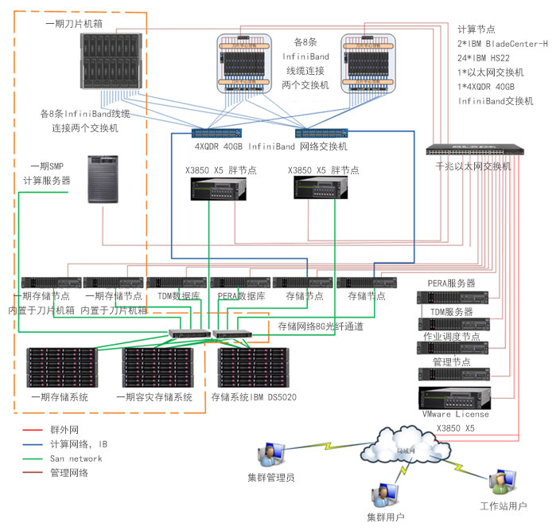

CAE高性能运算的应用可以分为隐式有限元分析（IFEA）、显式有限元分析（EFEA）和计算流体动力学（CFD）三个子学科。采用隐式算法的软件主要有ABAQUS/Standard、ANSYS、NASTRAN等，适合求解静力、模态、屈曲等问题；采用显式算法的软件主要有ABAQUS/Explicit、LS-DYNA、PAM-CRASH等，适合求解接触、碰撞、冲击等问题。
几乎所有的制造企业的高性能计算都依赖于独立软件开发商（ISV）提供的商业软件，只有流体动力学算题中结构网格计算类型的部分软件是用户自己开发的。因此制造行业用户在购买硬件平台的同时通常会购买相应的科学计算软件产品。
北京中航嘉城科技股份有限公司在高性能计算领域有着丰富的经验，依托并行计算、高性能硬件平台搭建先进的高性能计算平台，为制造企业提供强有力的技术支撑能力。
